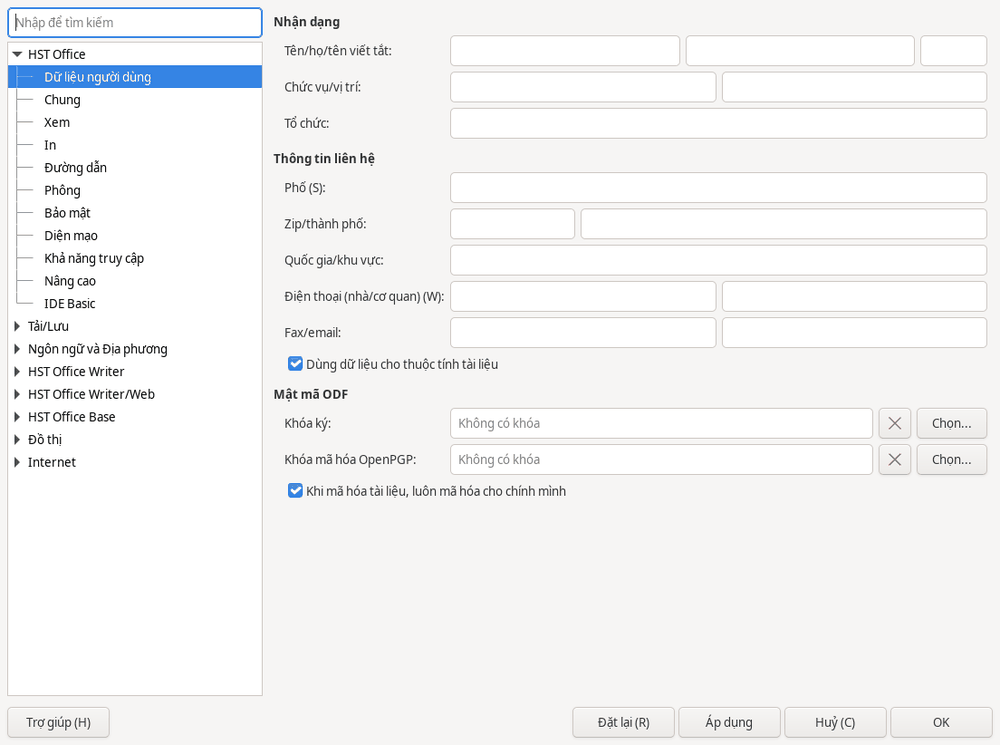

Khác
Lưu tệp Word, Excel, PowerPoint
Mở tệp Word, Excel, PowerPoint
HST Office mở trực tiếp các tệp .docx, .xlsx, .pptx và các tệp cũ .doc, .xls, .ppt.
Chọn (Ctrl+O), rồi chọn tệp cần mở.
Định dạng lưu mặc định là OpenDocument: .odt cho văn bản, .ods cho bảng tính và .odp cho trình chiếu.
Lưu một tệp theo định dạng cần gửi
- Chọn hoặc nhấn Ctrl+Shift+S.
- Tại , chọn định dạng phù hợp với loại tài liệu trong bảng dưới đây.
- Bấm .
- Nếu được hỏi có giữ định dạng hay không, chọn dùng định dạng Word, Excel hoặc PowerPoint tương ứng.
| Loại tài liệu | Định dạng cần chọn |
|---|---|
| Văn bản | |
| Bảng tính | |
| Trình chiếu |
Đặt định dạng lưu mặc định
- Mở .
- Tại mục , chọn loại tài liệu và định dạng bạn muốn dùng.

Kiểm tra tệp sau khi lưu. Phông chữ, hiệu ứng và macro có thể làm tài liệu hiển thị khác nhau. HST Office không bảo đảm giữ nguyên hoàn toàn cách hiển thị. Với tài liệu quan trọng, hãy mở lại tệp đã lưu để kiểm tra hoặc gửi kèm bản PDF.